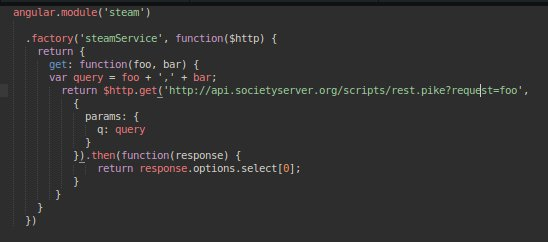

By Akhil Pandey, June 04, 2016
By Akhil Pandey, June 04, 2016
Before breaking it down, to all those who don't know what REST API's are :
"REST is acronym for REpresentational State Transfer. It is architectural style for distributed hypermedia systems ans was first presented by Roy Fielding in 2000 in his famous dissertation."
Source : "restfulapi.net"
So what is a Promise ?
Generally promises are representation of a value that which might not be available to us as of now but at some point eventually it will be available. Observe the below image to understand how promises work.

So how is this better than callbacks ?
Generally if you are using callbacks in your codebase then at some point of time either for i/o's or file buffers or
something might come in your way and makes you write nested callbacks. Writing nested callbacks is difficult and an
alternative to that is promise

Angular has this beautiful service called $q which is helpful for creating promises and using them in
your angular applications. Generally many people have concerns over $q but $q is tightly
integrated with the scope life cycle. So be it any task it contains all the necessary features needed by most of the
heavy duty asynchronous tasks.
Now to start off angular can be really powerfull with the $http Service provided the fact that it has
immense potential in allowing us to create heavy duty REST ful API's, CRUD operation based web applications etc. So
let us understand the $http service first before using promises for creating a REST ful API.
$http
|_____ .success()
For a success(), callback is called asynchronously when the request completes and the
response arrives from the server
|_____ .error()
For an error(), the error callback is fired
Callbacks which are accpeted by above methods are :
- data: It is a response obtained from server.
- status: HTTP status codes 100x, 200x, 300x, 400x, etc which returned from server.
- config: Object used for generating the request.
- headers: Headers sent by the server.
- statusText: HTTP status text of the status code.
Chaining is one of the most important aspects of promises. Here the basic idea is that promises can be composed through chaining. This means you can trigger a specified task only after previous promise has been resolved.
Handling errors by designing a promise that always rejectsNo API is complete without writing a handler or a middleware that takes care of all the requests which are generally errored. Designing this will be useful if we want to tell a user about the occurrence of an error in terms of a promise rather than a simple value.

NOTE : Generally while using $http Service there are somethings which one should have knowledge
of, If we happen to send a JS object as POST data in a POST/PUT request, it's serialized to JSON before getting sent.
Similarly, if the server responds with a JSON string it's parsed into a JavaScript object and passed to the success callback attached to the promise.
Thats it folks,
Happy Hacking !!